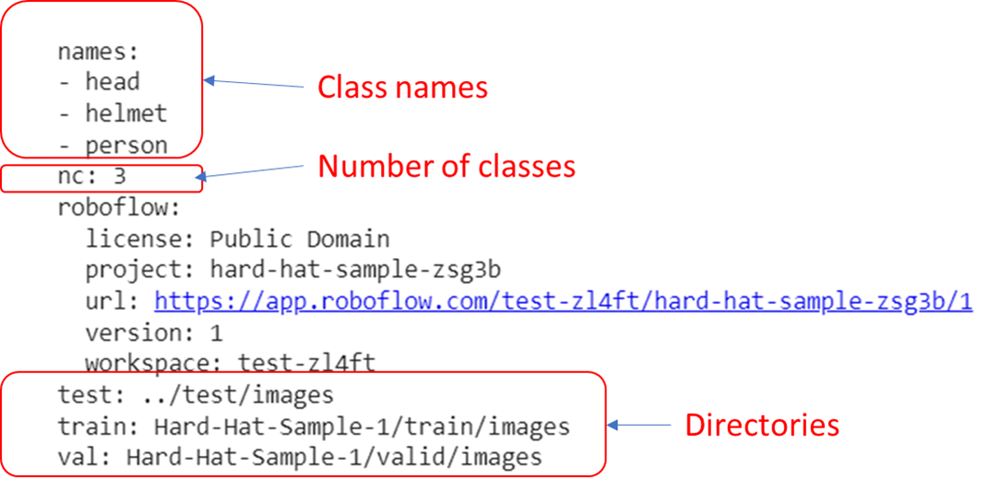

A. Installation
- Clone the Yolo-v5 repository from github
!git clone https://github.com/ultralytics/yolov5
%cd yolov5/
Install necessary libraries for Yolo-V5 training
Use requirements.txt to install all required libraries quickly with following command
!pip install -qr requirements.txt
Common libraries for deep learning
- torch: a standrad deep learning library lauched by Facebook
- scipy: libray for scientific studies. Some tools such as Matrix calculation
- pandas: DataFrame library. Package data to a frame and display information easily
- numpy: sub-library in scipy.
- matplotlib.pyplot: Display library with graph
Check the setup
import torch
from IPython.display import Image, clear_output # to display images
from utils.downloads import attempt_download # to download models/datasets
# clear_output()
print('Setup complete. Using torch %s %s' % (
torch.__version__, torch.cuda.get_device_properties(0) if torch.cuda.is_available() else 'CPU'))
It will output the cuda version of your computer. It is not important information for training but usually give you correct version if the current environment is avaible.
B. Deploy training data to Roboflow
Roboflow works like Google Image but it is a platform to help you process and transfer images to the formated image of machine learning.
Alternatively, you can use below tools to reduce costs of trainng
Although Roboflow will make your training easy, number of images / training data is limited. We may consider to use other tools to cut down the costs. However, we will use Roboflow to store training data at current stage because it greatly improve develop experience.
Download your training data with python code
- Install roboflow
!pip install -q roboflow - Direct to your data location
%cd /content/yolov5 - Run the python code to download formated data
from roboflow import Roboflow rf = Roboflow(api_key="{api_secret}") project = rf.workspace("{workspace}").project("{project_name}") # This line will define what type of data you want to down from roboflow dataset = project.version(1).download("yolov5")
In this example, you can use some official data provided by Roboflow Data
Different formats provided by Roboflow
- Check your downloaded data
%cat {dataset.location}/data.yaml
"data.yaml" is a file to tell the system how to import images and labels from the directories

Modify this template if you are using other tools to process training images
names:
- head
- helmet
- person
nc: 3
test: ../test/images
train: Hard-Hat-Sample-1/train/images
val: Hard-Hat-Sample-1/valid/images